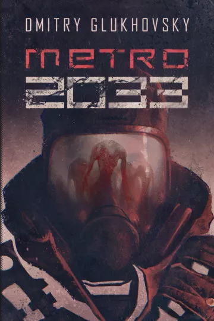
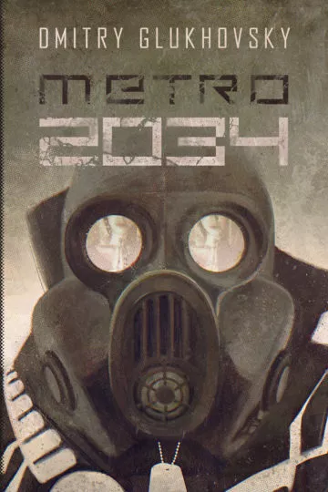
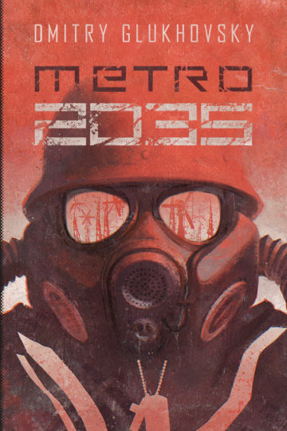
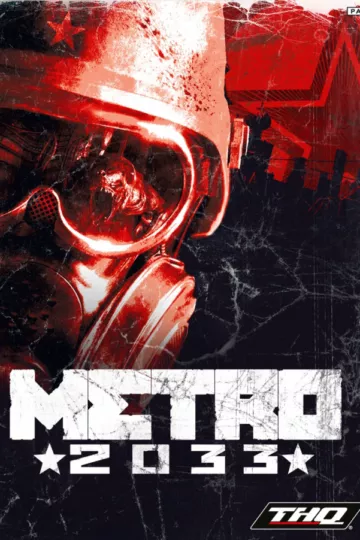
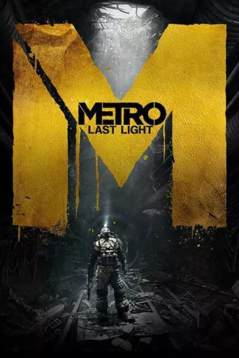
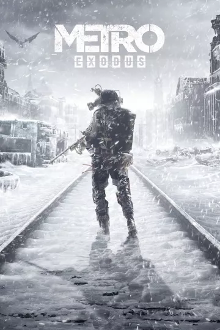

Rosyjski pisarz, dziennikarz i felietonista.
Pracował dla Euronews TV, Deutche Welle i Russia Today. Pisze na łamach „Harper's Bazaar”, „l'Officiel” i „Playboya”. Laureat nagrody Europejskiego Towarzystwa Fantastyki Naukowej. Należy do pokolenia rosyjskich literatów krytycznie oceniających politykę swojego kraju i wzywającego do jej pełnej demokratyzacji.
Największy rozgłos przyniosła mu postapokaliptyczna powieść „Metro 2033”, którą zaczął pisać w wieku 18 lat. Jej kolejne fragmenty publikował w internecie, pozwalając czytelnikom do pewnego stopnia wpływać na fabułę. Ten pionierski wówczas eksperyment interaktywny przyniósł mu rzeszę oddanych fanów. Ukończone dzieło opublikowano w Rosji w 2005 roku i okazało się wielkim bestsellerem, osiągając kilkusettysięczny nakład. Prawa do powieści „Metro 2033” zostały sprzedane do ponad 30 krajów; w oparciu o jej fabułę i pomysł powstały gry komputerowe, planowana jest również jej hollywoodzka ekranizacja. W Polsce nakład tej powieści przekroczył już 200 tys. egzemplarzy.
Glukhovsky w 2009 roku wydał w Rosji kolejną postapokaliptyczną powieść, „Metro 2034”, a swój pomysł rozwinął w międzynarodowy projekt o nazwie „Uniwersum Metro 2033”. Pod jego szyldem, stosując się do ustalonych przez Glukhovsky'ego reguł, piszą i publikują autorzy z całego świata. Powieści Glukhovsky'ego oraz seria „Uniwersum Metro 2033” cieszą się w Polsce niesłabnącym zainteresowaniem i należą do najpoczytniejszych książek literatury postapokaliptycznej. W 2015 roku ukazała się wyczekiwana trzecia część trylogii – „Metro 2035”. Prawa do tłumaczenia powieści zostały wykupione przez wydawnictwa na długo przed jej ukończeniem.
Metro 2033

Czy kiedykolwiek przyszło ci do głowy, że ostatni epizod historii cywilizacji człowieka rozegra się w przejmującej atmosferze moskiewskiego metra? Czy człowiek, który w marzeniach sięgał gwiazd, godzien jest skończyć jak szczur, sto metrów pod ziemią? Mało prawdopodobne?
Rok 2033. W wyniku konfliktu atomowego świat uległ zagładzie. Ocaleli tylko nieliczni, chroniący się w moskiewskim metrze, które dzięki unikalnej konstrukcji stało się najprawdopodobniej ostatnim przyczółkiem ludzkości. Na mrocznych stacjach, rozświetlanych światłami awaryjnymi i blaskiem ognisk, ludzie ci próbują wieść życie zbliżone do tego sprzed katastrofy. Tworzą mikropaństwa spajane ideologią, religią czy po prostu ochroną filtrów wodnych… Zawierają sojusze, toczą wojny.
WOGN to wysunięta najbardziej na północ zamieszkała stacja metra. Kiedyś była jedną z najpiękniejszych, a po zagładzie przez długi czas pozostawała bezpieczna. Teraz pojawiło się na niej śmiertelne niebezpieczeństwo.
Artem, młody mężczyzna z WOGN-u, otrzymuje zadanie: musi przedostać się do legendarnej stacji Polis, serca moskiewskiego metra, aby przekazać ostrzeżenie o nowym niebezpieczeństwie. Od powodzenia jego misji zależy przyszłość nie tylko peryferyjnej stacji, ale być może całej ocalałej w metrze ludzkości
Metro 2034

Żyję w świecie, w którym nie ma jutra. Nie ma w nim miejsca na marzenia, plany, nadzieje… Uczucia ustępują tu miejsca instynktom, a najważniejszy z nich każe przeżyć. Za wszelką cenę.
Rok 2034. Od pamiętnych wydarzeń, które początek i finał miały na stacji WOGN, minął niespełna rok. Czarni, ponoć śmiertelne zagrożenie dla tych nielicznych, którzy w czeluściach moskiewskiego metra przetrwali atomową apokalipsę, zniknęli na dobre, zgładzeni przez Artema i jego towarzyszy.
Na drugim krańcu metra mieszkańcy Sewastopolskiej toczą walkę o przetrwanie z nowymi formami życia, wdzierającymi się do tego ostatniego schronienia ludzkości. Los stacji i jej mieszkańców zależy od dostaw amunicji, a te nagle ustają. Karawany giną bez wieści, urywa się łączność.
Z zadaniem wyjaśnienia zagadki i przywrócenia dostaw wyruszają: młody Ahmed, leciwy, niespełniony kronikarz metra Homer i Hunter, który niegdyś zaginął wśród czarnych, a teraz się odnalazł, choć jego tożsamość budzi wątpliwości… Do wyprawy dołącza Sasza, córka wygnanego naczelnika Awtozawodskiej.
Kim naprawdę jest Hunter? Czy odwzajemni uczucie, jakim obdarzyła go Sasza? Jaką tajemnicę skrywają mroczne tunele? I czy garstce śmiałków uda się ocalić tych nielicznych, którzy przetrwali zagładę?
Metro 2035

Miejsce człowieka nie jest pod ziemią. Żyjecie w tunelach jak robaki! Tu nie ma dla nas jutra. Metro to cmentarz. Nie będziemy tu ludźmi. Nie stworzymy niczego nowego. Nie rozwiniemy się. Chorujemy tu. Wyradzamy się. Nie ma powietrza. Nie ma miejsca. Jest ciasno.
Trzecia wojna światowa starła ludzkość z powierzchni Ziemi. Planeta opustoszała. Całe miasta obróciły się w proch i pył. Przestał istnieć transport, zamarła komunikacja. Radio milczy na wszystkich częstotliwościach. W Moskwie przeżyli tylko ci, którzy przy wtórze syren alarmowych zdążyli dobiec do bram metra. Tam, na głębokości dziesiątek metrów, na stacjach i w tunelach, ludzie próbują przeczekać koniec cywilizacji. W miejsce utraconego ogromnego świata stworzyli swój własny ułomny światek. Czepiają się życia i ani myślą się poddać. Pewnie marzą o powrocie na powierzchnię – kiedyś, kiedy obniży się poziom radiacji. I nie tracą nadziei na odnalezienie innych ocalałych…
Metro 2035 kontynuuje historię Artema z pierwszego tomu kultowej serii. Na tę książkę miliony czekały przez całe dziesięć lat, a prawa do tłumaczenia wydawnictwa wykupiły na długo przed jej ukończeniem. Metro 2035 jest przy tym książką niezależną i również od niej można zacząć przygodę z cyklem Glukhovsky'ego, który podbił serca czytelników w Rosji i na całym świecie.
Metro 2033

W 2013 roku świat, który znamy, spotkała zagłada. Atomowa apokalipsa zmiotła niemal całą ludzkość, zamieniając powierzchnię planety w toksyczne pustkowie. Garstka ocalałych znalazła schronienie głęboko w podziemiach Moskwy, rozpoczynając nową erę w dziejach ludzkiej cywilizacji, Erę Ciemności. I tak nastał rok 2033. Pod ziemią narodziło się i dojrzało całe pokolenie. Ufortyfikowane „miasta”– stacje metra – rozpaczliwie starają się przetrwać, tocząc walki między sobą, jak i przeciwko przerażającym mutantom z zewnątrz.
Ty nazywasz się Artem. Urodziłeś się na powierzchni w ostatnich dniach przed pożogą, jednak dorastałeś już pod ziemią. Mimo że nigdy jeszcze nie opuściłeś granic własnej stacji, w wyniku dziwnego zrządzenia losu powierzono ci ważną misję. Musisz udać się do ścisłego centrum sieci Metra, by ostrzec niedobitki ludzkości przed potwornym zagrożeniem.Twoja droga wieść będzie od zapomnianych katakumb głęboko poniżej tuneli metra aż na wymarłe pustkowie na powierzchni, gdzie powodzenie twej misji zadecyduje o losie ludzkiego gatunku.
A jeśli prawdziwe zagrożenie czai się w środku?
Metro Last Light

Jest rok 2034. Głęboko poniżej ruin post-apokaliptycznej Moskwy biegnie sieć tuneli Metra, gdzie resztka ocalałych przedstawicieli rasy ludzkiej walczy o przetrwanie w obliczu śmiertelnego zagrożenia z zewnątrz, jak i od wewnątrz. Krwiożercze mutanty czają się w mrocznych, podziemnych katakumbach, jak i na wymarłej powierzchni, gdzie pod zatrutym niebem szaleją toksyczne wichry.
Tymczasem skłócone frakcje mieszkańców Metra, zamiast się zjednoczyć, pogrążyły się w wojnie o pełnię władzy, którą ma zagwarantować ocalała instalacja militarna w bunkrze D6. Wzmaga się konflikt wewnętrzny, którego skutkiem może być ostateczne wyginięcie gatunku ludzkiego.
Artem, przygnieciony ciężarem winy, lecz wspierany nadzieją jest kluczem do naszego przetrwania – ostatnim płomykiem światła w gęstniejącym mroku…
Metro Exodus

Jest rok 2036. Ćwierć wieku temu wojna nuklearna spustoszyła cały glob. Tunele metra zrujnowanej Moskwy dają schronienie kilku tysiącom ocalałych, którzy kurczowo trzymają się czegoś, co można nazwać namiastką normalnego życia. Wielu doświadczyło już okrucieństwa wojny domowej, nieobca im też jest walka ze zmutowanymi bestiami i nadprzyrodzonymi okropieństwami.
Ale ty, Artem, musisz uciec z metra i poprowadzić grupę Spartan na niesamowitą wyprawę przez cały kontynent. Gdzieś na wschodzie Rosji na pewno jest miejsce, gdzie moglibyście wieść spokojne życie. Musi tam być. Metro Exodus to epicka, napędzana fabułą pierwszoosobowa gra akcji, która łączy elementy skradanki i otwartej walki z eksploracją i survival horrorem. Dzieło studia 4A Games to jeden z najbardziej angażujących światów, jakie kiedykolwiek powstały na potrzeby gier.
Eksploruj rosyjskie bezdroża na rozległych, otwartych mapach i daj się pochłonąć ekscytującej opowieści rozgrywającej się na przestrzeni całego roku. Na własne oczy zobacz post nuklearną wiosnę, lato, jesień i zimę. W tej największej przygodzie, Metro Exodus kontynuuje historię Artema, bohatera powieści Dmitria Glukhovskiego.